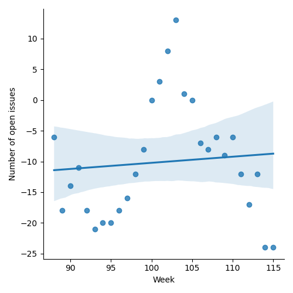
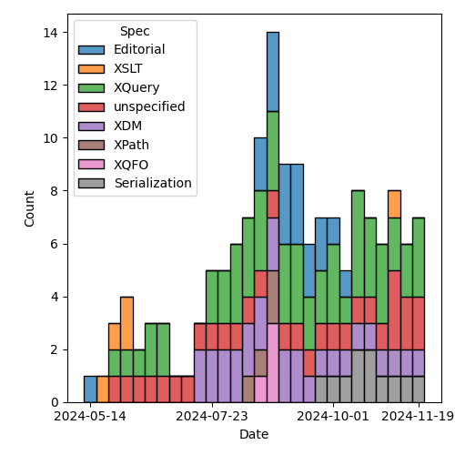
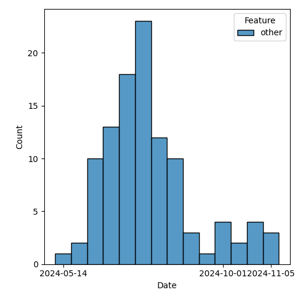

QT4 CG Meeting 100 Minutes 2024-11-26
Meeting index / QT4CG.org / Dashboard / GH Issues / GH Pull Requests
Table of Contents
- Minutes
- Summary of new and continuing actions
[0/9] - 1. Administrivia
- 2. Technical agenda
- 2.1. PR #1570: 1550 Replace node-kind() with new type-of() function
- 2.2. PR #1604: 1593 Allow `document-node(NameTestUnion)`
- 2.3. PR #1603: 1602 Editorial update to "other operations" on maps and arrays
- 2.4. PR #1599: 1598 $err:stack-trace: string, please
- 2.5. PR #1505: 1503 Add err:map, err:stack-trace, err:additional to XSLT
- 2.6. PR #1586: 1527 Move record types into separate sections
- 2.7. PR #1587: 557 Add fn:binary-resource
- 3. Any other business
- 4. Adjourned
Minutes
Approved at meeting 101 on 3 December 2024.
Summary of new and continuing actions [0/9]
[ ]QT4CG-080-07: NW to update the build instructions in the README[ ]QT4CG-082-02: DN to work with MK to come to agreement on the fn:ranks proposal[ ]QT4CG-088-01: NW to consider how best to add a dedication to MSM.[ ]QT4CG-088-04: [Someone] needs to update the processing model diagram needs vis-a-vis the static typing feature[ ]QT4CG-089-01: CG to draft a PR that attempts to resolve the operators described in #755 to a smaller number of orthogonal choices.[ ]QT4CG-097-02: MK to make the XSD schema component references into links to XSD[ ]QT4CG-097-03: DN to proposal an axis for accessing the siblings of a node.[ ]QT4CG-098-02: NW to look at the XSL stylesheet for XSD, #374.
1. Administrivia
1.1. Roll call [8/12]
DB, JLO give regrets.
[ ]David J Birnbaum (DB)[X]Reece Dunn (RD)[ ]Sasha Firsov (SF)[X]Christian Grün (CG)[X]Joel Kalvesmaki (JK) [:05-][X]Michael Kay (MK)[ ]Juri Leino (JLO)[X]John Lumley (JWL)[X]Dimitre Novatchev (DN)[ ]Wendell Piez (WP)[X]Ed Porter (EP)[X]Norm Tovey-Walsh (NW). Scribe. Chair.
1.2. Accept the agenda
Proposal: Accept the agenda.
Accepted.
1.2.1. Status so far…
These charts have been adjusted so they reflect the preceding six months of work.

Figure 1: “Burn down” chart on open issues

Figure 2: Open issues by specification

Figure 3: Open issues by type
1.3. Approve minutes of the previous meeting
Proposal: Accept the minutes of the previous meeting.
Accepted.
1.4. Next meeting
This next meeting is planned for 3 December.
CG gives regrets.
The CG does not plan to meet on 24 or 31 December.
1.5. Review of open action items [1/9]
(Items marked [X] are believed to have been closed via email before this agenda was posted.)
[ ]QT4CG-080-07: NW to update the build instructions in the README[ ]QT4CG-082-02: DN to work with MK to come to agreement on the fn:ranks proposal[ ]QT4CG-088-01: NW to consider how best to add a dedication to MSM.[ ]QT4CG-088-04: [Someone] needs to update the processing model diagram needs vis-a-vis the static typing feature[ ]QT4CG-089-01: CG to draft a PR that attempts to resolve the operators described in #755 to a smaller number of orthogonal choices.[ ]QT4CG-097-02: MK to make the XSD schema component references into links to XSD[ ]QT4CG-097-03: DN to proposal an axis for accessing the siblings of a node.[ ]QT4CG-098-02: NW to look at the XSL stylesheet for XSD, #374.[X]QT4CG-099-01: MK to add a default layout option for elements-to-map.- MK looked and decided that it doesn’t work. Came up with a different idea to disable some options.
1.6. Review of open pull requests and issues
1.6.1. Blocked
1.6.2. Merge without discussion
The following PRs are editorial, small, or otherwise appeared to be uncontroversial when the agenda was prepared. The chairs propose that these can be merged without discussion. If you think discussion is necessary, please say so.
- PR #1607: 1590 Drop draft current-mode function from catalog
- PR #1601: 1516(B) Fix problems with testing examples
- PR #1600: 1594 typos: dependant and repeated word
- PR #1597: 1595 Editorial
Proposal: Merge these PRs without discussion.
Accepted.
1.6.3. Substantive PRs
The following substantive PRs were open when this agenda was prepared.
- PR #1604: 1593 Allow `document-node(NameTestUnion)`
- PR #1603: 1602 Editorial update to "other operations" on maps and arrays
- PR #1599: 1598 $err:stack-trace: string, please
- PR #1505: 1503 Add err:map, err:stack-trace, err:additional to XSLT
- PR #1587: 557 Add fn:binary-resource
- PR #1586: 1527 Move record types into separate sections
- PR #1570: 1550 Replace node-kind() with new type-of() function
2. Technical agenda
2.1. PR #1570: 1550 Replace node-kind() with new type-of() function
See PR #1570.
MK introduces the PR.
- MK: After discussion, decided to add
type-of()which does more thannode-kind().- … MK reviews the prose of the PR …
- … We walk up the type hierarchy to the first non-anonymous type
- JWL: Isn’t a sequence of strings better than a union? You might have to re-tokenize.
- MK: Maybe.
- NW: What about a case when there’s a different binding for
xs:? - MK: I don’t have a very clear picture of what the use cases are for this function.
- … My use cases are diagnostic, so it’s just for human readability.
- CG: I like it, simple strings are what users want, I think. If you want to do more sophisticated things, write your own function.
- RD: In terms of possible uses: within my XQuery plugin, I’m doing a similar sort of logic when determing the types of a value in things like query result output, profiling, debugging, etc.
Proposal: Accept this PR.
Accepted.
2.2. PR #1604: 1593 Allow `document-node(NameTestUnion)`
See PR #1604
MK introduces the PR: this is a bit of syntactic sugar designed to encourage people to say when a well-formed document node is expected.’
- MK: We allow
NameTestUnionin aDocumentTest- … Have clarified the text with respect to
document-node(E). - …
document(NTU)is a shorthand fordocument(element(NTU)). - … So
document(*)is a well-formed XML document.
- … Have clarified the text with respect to
- MK: It’s expanded in the subtyping rules.
- NW: What about whitespace text nodes?
- MK: The standard rules for generating an infoset when parsing won’t give you
any whitespace there.
- … You could programmatically construct them that way; the spec was a little bit ambiguous.
- … I sort of looked for all the evidence I could find and decided that the intention was that they aren’t allowed.
- MK: I’ve used the new syntax in Functions and Operators.
Proposal: Accept this PR.
Accepted.
2.3. PR #1603: 1602 Editorial update to "other operations" on maps and arrays
See PR #1603
- MK: This is purely editorial; I found some text that was a mess.
- … Both maps and arrays have a section called “other operations”. I’ve updated them both.
- … For maps it’s a summary of things you can do with maps other than apply functions to them.
- … For arrays, we had two almost identical sections with odd headings.
- … Rewrote the section to say something useful.
Proposal: Accept this PR.
Accepted.
2.4. PR #1599: 1598 $err:stack-trace: string, please
See PR #1599
- CG: This is pretty small. We’ve talked about it several times.
- … I’d like to change the type of the
$err:stack-tracefrom function to string so that it’s easier to serialize. - … The CG should be able to provide a lazy string if it takes too much time to materialize.
- … I’d like to change the type of the
- MK: I think you’re probably right.
- RD: What effect would this have on compatibility. If someone wanted to call this across different implementations. Wouldn’t they have to do implementation-specific things for the stack trace.
- CG: The stack tracke string is entirely implementation defined.
Some discussion of the return type.
- MK: I think we should prescribe a string or nothing. If you want to parse it, you’ll have to know what product you’re dealing with.
Proposal: Accept this PR.
Accepted.
2.5. PR #1505: 1503 Add err:map, err:stack-trace, err:additional to XSLT
See PR #1505
- MK: I think we can accept this contingent on making the equivalent change.
- … MK walks through the prose of the PR; it brings XSLT in line with the XPath changes.
Proposal: Accept this PR.
Accepted.
MK to make the corresponding change to $err:stack-trace and then merge the PR.
2.6. PR #1586: 1527 Move record types into separate sections
See PR #1586
- MK: This is also primarily editorial. I also picked up the change to add a named record type for key-value pairs. It was a separate issue but in the same general area.
MK reviews how the material is presented.
This PR involves stylesheet changes so it’s not usefully presented in the formatted PR. We’re looking at a local build on MK’s machine.
- MK: The
map:pairs()function now has a link to thekey-value-pairrecord type in a free-standing section.- … There’s a bit of a consistency issue regarding which are extensible and which aren’t.
- … Generally on input we want to accept additional properties and ignore them.
- MK: There are about 5 record types now.
- … I’ve anticipated putting them in the fn: namespace and adding them to the static context.
- RD: Do we have the declare item type syntax standardized?
- MK: Declare record is standardized in XQuery
- RD: Should we also have a signature for those?
- MK: If we put them as implicitly declared records, you also get a constructor
function for them. So
fn:key-value-pairduplicates themap:pairfunction. - RD: Should we make the record type with that implicit constructor?
- MK: I think it’s logical to have the record and the constructor function having the same name.
- RD: What I mean is replace
map:pairwith themap-pairrecord type. - MK: Yes, I think that’s where this leads.
- CG: Could it just be
pair? Do we have other pairs? - MK: That’s an open question. Currently, we use the name
pairqualified bymap:. If we called the record typemap-pair, I think we’d have enough context for it. - JWL: I’m in favor of using
key-value-pair, not justpairormap-pair.
Proposal: Accept this PR.
Accepted.
2.7. PR #1587: 557 Add fn:binary-resource
See PR #1587
- MK: This is a bit related to what we do about the EXPath file and binary modules.
- … This allows us to read a binary resource.
- … (The PR also tidies up a lot of things about base URIs in the static and dynamic contexts.)
- MK: There’s a big question about what we call this function.
- MK: … The function is completely straightforward.
- MK: … Wait, the paragraph about mapping to URIs is wrong.
- MK: There needs to be a parallel change about binary resources. Unfinished business.
- JWL: The result type doesn’t have an option on it, but the rules say it could be.
- … Are we going to try to get an output method to output a binary resource?
- MK: That gets to the thorny question of functions with side effects.
- JWL: No, I mean as part of the serialization.
- NW: I think JWL is only proposing that we need a
binaryoutput method. - CG: The function is marked as deterministic, does that mean it always needs to return the same result?
- MK: Yes, I think I decided to be consistent with the other resource functions.
- … I’m not happy about that, but this didn’t seem to be the right place to change it.
- CG: All the functions in the file module are all non-deterministic, so you can decide which ones to use.
- DN: In the summary of the function it says it returns binary, but it should
say that it returns
xs:base64Binaryto avoid confusion.- … To me, “resource” means a URL or a URI, not the content. I’d prefer to
have a more exact name like:
binary-resource-content.
- … To me, “resource” means a URL or a URI, not the content. I’d prefer to
have a more exact name like:
- NW: I suppose we could go with
binary-docfor parallelism? - MK: Maybe, but we tend to think of
docas XML documents. - DN: Is it meaningful to ask what kind of format it is, in the case when it’s an executable?
- MK: It’s a question as to whether this relates in any way to HTTP content types.
- DN: Maybe we could have some way of getting more information about the type of the resource.
- JWL: The example we use the EXPath binary specification is things like images.
- … There’s typically a MIME type, but you can also sniff.
- MK: From the magic bytes at the start.
- RD: I think it would be more useful to have MIME type detection as a separate function.
- NW: MIME type detection is just a mapping to filename extensions these days, so less useful.
- DN: Binary can be a little bit risky. It has security implications maybe?
Maybe there should be some warning for this. And should there be an additional
parameter for virus checking?
- … Maybe in some applications we would not want the function to be deterministic.
- MK: I think that’s a valid point, but determinism is completely orthogonal to
the question of what the resource type is.
- … I think the security implications are orthogonal as well. JavaScript is text and it can do anything it likes.
- JK: I wonder if there are any thoughts about what to do about the file library.
- MK: The specification depends totally on assumptions about order of execution that ends up being thoroughly unsatisfactory from a specification point of view, but livable from a product perspective.
3. Any other business
- NW: JWL was working on the binary specification, would you like to show us some of that?
JWL demos the progress he’s made porting the EXPath Binary specification to the QT4 workflow.
- JK: Nice work!